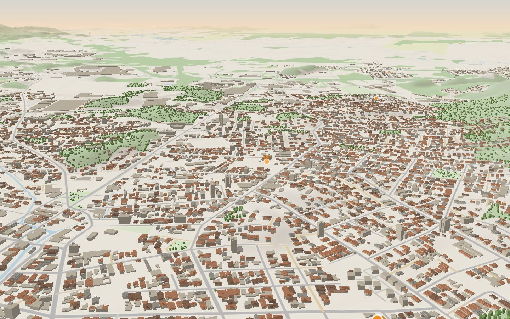

Antes do imóvel
Por onde você quer morar?
Escolha o jeito de viver. O mapa voa até os bairros que combinam e mostra o que está à venda em cada um.
Os textos dos bairros são exemplos; num site real, o corretor escreve. Os números saem dos imóveis de exemplo do site.
